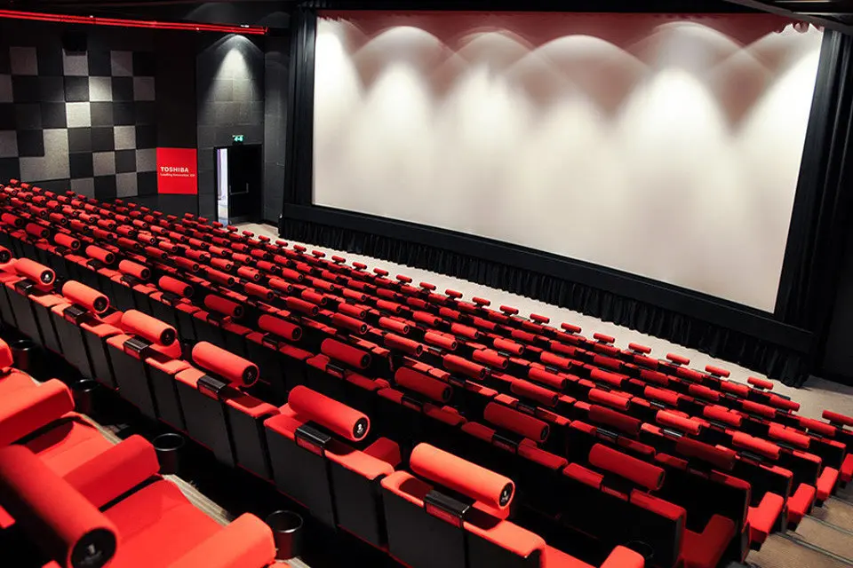

O nama
Povijest
Star City grupa svoje početke bilježi još davne 1965. godine, kada je tvrtka Kieft & Kieft Filmtheater GmbH otvorila svoje prvo klasično kino u Lübecku u Njemačkoj. Nakon više od četiri desetljeća rada, 1993. godine otvaraju svoj prvo Star City multipleks kino u Njemačkoj i započinju sa širenjem po cijeloj Europi. Nekad mala obiteljska tvrtka Kieft & Kieft je danas dio Star City grupe – s više od 100 multipleksa u više europskih zemalja.
Naša vizija…
Biti najbolji i najveći kino lanac u regiji koji će biti standard i mjerilo kvalitete i profesionalnosti u svim segmentima poslovanja - posjetiteljima prvi izbor za kino, zaposlenima poželjan poslodavac, poslovnim subjektima pouzdan partner i društveno odgovorna kompanija.